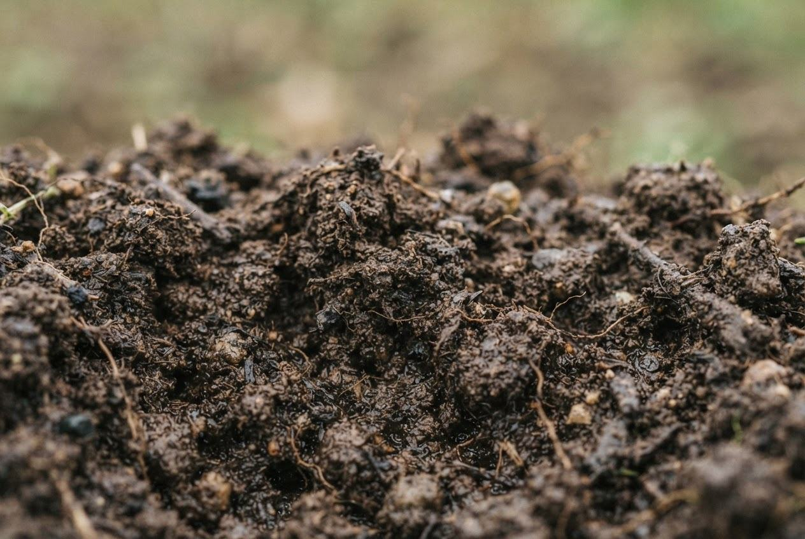

CROP PLANNING / FIELD CONDITIONS
Tell us about your growing conditions.
Begin with four core values. Add context when you have it; leave unknown optional details blank.
01 / CORE CONDITIONS
The essentials
Use a soil test and representative climate averages for the same location and month. Daily extremes and monthly means are not interchangeable.
For a real assessment, replace every demo value. If a core value is unknown, collect it before continuing; the platform does not infer it from your location.
02 / OPTIONAL · EXPANDED
Add a little field context
These add-on details can make the reasoning more specific. They do not remove uncertainty.
Soil photo assessment
Take a photo or upload one to review in your browser. The photo is not analyzed and does not replace pH, nutrient, or chemistry measurements.

Tentative suggestion
Demo assessment: loam · confirm or choose manually
pH, nutrients, and chemistry cannot be measured from a photo.
03 / OPTIONAL REFERENCE DETAILS
Plant-table context
Example temperature, rainfall, and pH ranges; growing periods; and typhoon and flood tolerance are shown with results. They come from an illustrative plant table, not a verified ECOCROP connection.
Continuing creates an illustrative shortlist, not a planting instruction or a forecast.
Review crop recommendations ↗